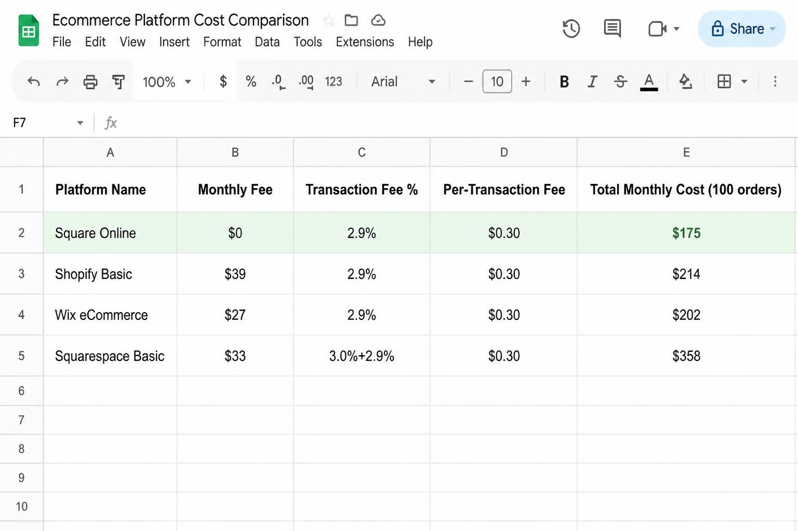
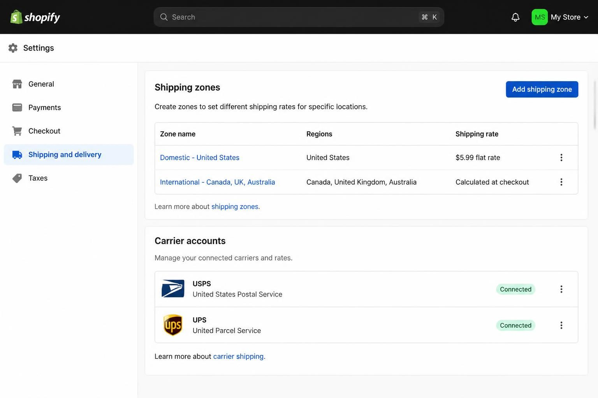
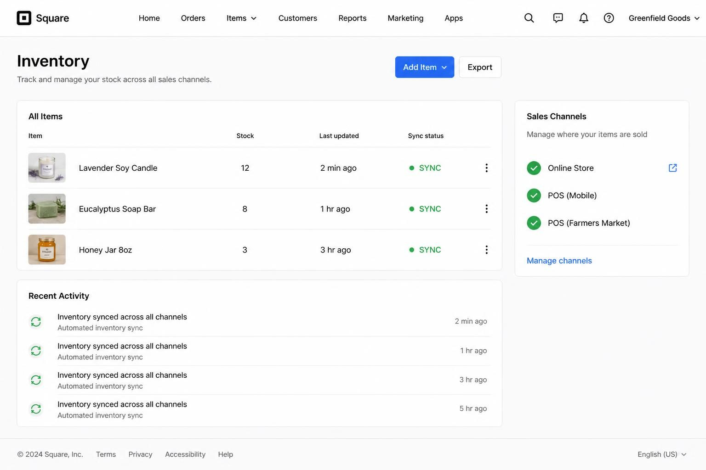
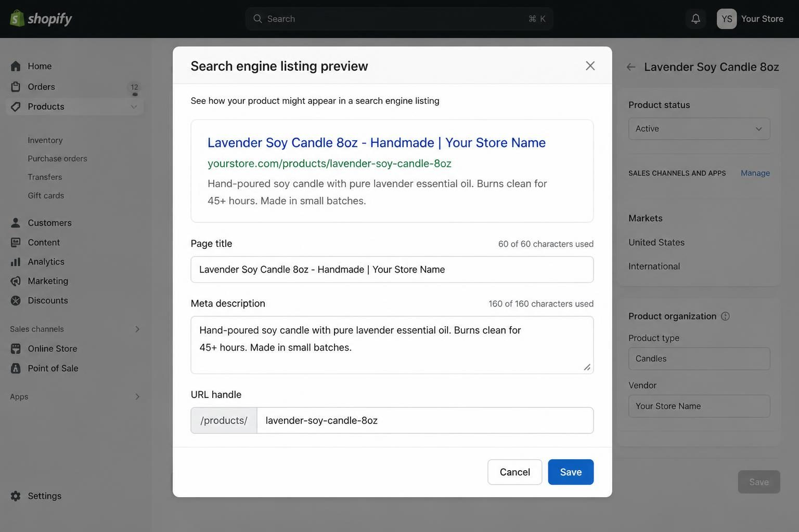

ONLINE STORE FOR SMALL BUSINESS: HOW TO SET UP A SHOP THAT ACTUALLY SELLS YOUR PRODUCTS
The best online store for a small business selling physical products is one that matches your current order volume, handles your specific product types without workarounds, and keeps transaction fees low enough that you actually profit from each sale. That single decision - picking the right platform before you build - determines whether your store becomes a sales engine or an expensive headache you abandon in three months.
Here is what most product sellers get wrong: they choose a platform based on what other businesses use, not what their specific situation requires. A jewelry maker selling 30 pieces monthly at local makers markets has completely different needs than someone dropshipping 500 items with no inventory. A skincare brand wanting subscription boxes needs features that would be total overkill for someone selling handmade candles at $35 each.
The advice you have probably read tells you to "just pick Shopify" or "start with a free platform." Neither answer is useful without knowing what you sell, how much you sell, and where you sell it.
I have spent ten years building digital products for small business owners - and I have watched hundreds of product sellers struggle with the wrong platform choice. The ones who succeed are not the ones with the biggest budgets. They are the ones who match their store setup to their actual business, not to some idealized version of where they hope to be in five years.
This guide walks you through exactly how to make that match. No vague platform comparisons. No affiliate-driven recommendations. Just the specific criteria that matter for product-based businesses and how to evaluate them for your situation.
THE REAL COST OF YOUR ONLINE STORE (BEYOND THE MONTHLY FEE)
Most product sellers fixate on the monthly subscription cost when comparing platforms. That is the wrong number to focus on.
Transaction fees compound faster than monthly fees for growing stores - and most beginners completely overlook them.
Let me show you the actual math. A store doing $5,000 per month in sales on a platform charging 2.9% plus $0.30 per transaction (a common rate) loses roughly $175 monthly just to payment processing. If that platform adds an additional transaction fee on top - some charge 0.5% to 2% extra unless you use their payment system - your total fee load climbs to $200-275 monthly.
Compare that to the $29 or $39 monthly subscription everyone obsesses over. The fees you pay per sale often exceed your subscription within the first few months of real volume.
Here is how different platforms stack up on fees for a $50 average order:
- Square Online (free plan): 2.9% + $0.30 per transaction = $1.75 per order
- Shopify Basic ($39/month): 2.9% + $0.30 per transaction = $1.75 per order (no additional Shopify fee if using Shopify Payments)
- Wix eCommerce ($27/month): payment processor fees only, typically 2.9% + $0.30 = $1.75 per order
- Big Cartel (free for 5 products): payment processor fees only = $1.75 per order
- Squarespace Commerce ($33/month): 3% transaction fee on the lower plan, plus payment processing = $3.25+ per order
What does this mean for your actual profit?
A product seller doing 100 orders monthly at $50 average order value ($5,000 revenue) pays roughly:
- Square free plan: $0 subscription + $175 fees = $175 total
- Shopify Basic: $39 subscription + $175 fees = $214 total
- Squarespace Basic Commerce: $33 subscription + $325+ fees = $358+ total
That Squarespace store costs $183 more monthly than the Square store - money that comes directly out of your profit margin. Over a year, that is $2,196 in extra costs.
The platform that looks cheapest at signup is often the most expensive at scale. Calculate your fees based on realistic monthly order projections, not on the subscription price displayed on the homepage.

MATCHING YOUR PRODUCT TYPE TO THE RIGHT PLATFORM
Different products have fundamentally different technical requirements. A clothing boutique needs size and color variants for every item. A candle maker needs simple product pages with no variants. A skincare brand needs subscription billing. A print-on-demand seller needs automatic fulfillment integration.
The platform that works perfectly for one product type can be completely wrong for another - even at the same price point.
Here is how to match your specific situation:
If you sell handmade goods with no variants (candles, soaps, jewelry, pottery):
Your priority is beautiful product photography display and simple shipping setup. You do not need complex inventory management or variant handling. Big Cartel (free for up to 5 products, $15/month for 50 products) or Square Online (free tier) handles this perfectly. Both let you focus on presentation rather than configuration.
If you sell apparel or accessories with size/color variants:
Every shirt needs Small, Medium, Large in three colors - that is nine SKUs for one product. You need a platform that handles variants elegantly and tracks inventory for each combination separately. Shopify excels here. Its variant system is built specifically for this use case, and inventory syncs automatically across combinations.
If you sell at local markets AND online:
Inventory sync is non-negotiable. If you sell a piece at Saturday's farmers market, your website needs to reflect that immediately - or you will charge someone for a product that is already gone. Square Online integrates directly with Square POS (what most market vendors already use). Shopify POS works similarly but requires the Shopify ecosystem.
If you want to add subscriptions (replenishment, boxes, memberships):
Recurring billing is either built into your platform or requires an expensive app. Shopify handles subscriptions through apps like Recharge ($99+/month). Squarespace Commerce Advanced includes subscriptions natively. Wix offers subscriptions on its higher-tier plans. If subscription revenue matters to your model, verify this feature before committing.
If you use print-on-demand (no inventory):
Your platform must integrate seamlessly with Printful, Printify, or Gooten. When a customer orders, that order needs to automatically route to your fulfillment partner. Shopify and WooCommerce have the deepest POD integrations. Most other platforms require manual order forwarding or limited app connections.
I have seen product sellers waste months on platforms that technically support their product type but make the daily workflow painful. A clothing seller on Big Cartel can technically add variants - but the interface fights you every step. A subscription seller on basic Shopify can technically add recurring billing - but the app costs more than the platform itself.
Match your platform to what you sell today, not to features you might need in three years. You can always migrate later. You cannot get back the six months you spent fighting the wrong system.
SHIPPING SETUP: WHERE MOST NEW STORE OWNERS FAIL
Shipping configuration is consistently the most technically challenging step - and the most abandoned. Competitor guides say things like "offer shipping, pickup, and delivery" without addressing the actual complexity involved.
Here is what shipping setup actually requires:
Step 1: Define your shipping zones
A shipping zone is a geographic area with its own rates. At minimum, you need:
- Domestic Zone 1: Your state or region (often cheapest)
- Domestic Zone 2: Rest of your country
- International Zone: If you ship globally (many small businesses do not - and that is fine)
Most platforms let you create zones by country, state, or zip code. Start simple. You can add complexity later.
Step 2: Choose your rate strategy
Three options exist, and each has tradeoffs:
Flat rate shipping: Every order ships for the same price regardless of contents. Simple for customers, easy to set up. Risk: you lose money on heavy orders and overcharge on light ones. Best for businesses with consistent product sizes.
Calculated rates (real-time carrier rates): The checkout pulls live rates from USPS, UPS, or FedEx based on package weight, dimensions, and destination. Most accurate, but requires entering weight and dimensions for every product. Some platforms charge extra for this feature.
Free shipping with threshold: "Free shipping on orders over $75." Increases average order value, simplifies checkout. You absorb shipping costs - make sure your margins support this.
Step 3: Set up carrier accounts
If you want discounted shipping rates (and you do), you need direct carrier accounts:
- USPS: Free account through usps.com - required for commercial pricing
- UPS: Free account through ups.com - volume discounts available
- FedEx: Free account through fedex.com
Alternatively, use your platform's integrated shipping. Shopify Shipping offers discounted USPS and UPS rates built into the platform. Square offers similar integrations. These are often cheaper than retail rates but more expensive than high-volume commercial accounts.
Step 4: Enter product weights and dimensions
This step takes the longest. Every product needs accurate weight (in pounds or ounces) and dimensions (length x width x height of the shipping package, not the product itself). If you skip this, calculated rates will not work - and flat rates might lose you money.
Pro tip: Weigh your most common products in their actual shipping packaging. A candle that weighs 8 ounces might ship in a box with padding that weighs 14 ounces total.
Step 5: Test the checkout yourself
Before launching, place a test order and go through the entire checkout. Check shipping costs for your actual address. Check shipping costs for a distant state. Check shipping costs for a heavy item versus a light one. If anything looks wrong, fix it now.

MOBILE-FIRST IS NOT OPTIONAL - IT IS WHERE YOUR CUSTOMERS BUY
Over 60% of ecommerce traffic now comes from mobile devices. Your product photos, checkout flow, and navigation must work flawlessly on a phone screen - not just look acceptable.
Most store owners build on desktop and never seriously test mobile until customers start complaining.
Here is what to check on your phone before launching:
Product images:
Can you see product details clearly? Are images cropping in awkward ways? Can you zoom in? Load your product pages on your actual phone and swipe through every image. If you cannot see texture, color accuracy, or important details, your photos need work - or your theme needs changing.
Navigation:
Can you find products in three taps or fewer? Is the menu easy to open and close? Are collection pages loading products in a scrollable grid? Mobile navigation should be dead simple. If customers have to hunt for products, they leave.
Checkout:
This is where mobile failures cost you sales. Test the entire checkout flow on your phone:
- Can you easily enter shipping address on a small keyboard?
- Are form fields large enough to tap accurately?
- Does the payment section load quickly?
- Can you complete purchase with Apple Pay or Google Pay (one tap)?
Mobile payment options like Shop Pay, Apple Pay, and Google Pay can increase conversion by 30% or more. If your platform does not offer these, or if the checkout requires too many steps, you are losing sales.
Page speed:
Load your homepage on mobile using cellular data (not WiFi). If it takes more than 3 seconds, your theme is too heavy or your images are too large. Google's PageSpeed Insights (free tool) will show you exactly what is slowing you down.
I recommend testing on both iPhone and Android if possible. Borrow a friend's phone if needed. What looks perfect on your device might break on another.
Theme selection based on mobile performance:
Free themes from Shopify, Wix, and Squarespace are generally optimized for mobile. Third-party premium themes vary wildly. Before buying any theme, check its demo on your phone. Navigate the collections. Add something to cart. Go through checkout. If anything feels clunky, that theme will cost you sales no matter how beautiful it looks on desktop.
If you want a deeper breakdown of choosing themes that actually convert on mobile, I have written a complete guide on how to choose a Shopify theme for your store that covers exactly what to test.
THE INVENTORY SYNC PROBLEM NOBODY WARNS YOU ABOUT
If you sell in multiple places - your website, local markets, pop-up shops, wholesale accounts - you need real-time inventory sync. Nothing damages customer trust faster than charging someone for a product that sold at Saturday's market.
This is not a nice-to-have feature. It is essential for multi-channel sellers.
How inventory sync actually works:
When you sell a product through any connected channel, the central inventory count decreases immediately. Your website shows 5 in stock. You sell 2 at the farmers market. Your website now shows 3 in stock - automatically, without you touching anything.
Which platforms handle this well:
- Square Online + Square POS: Seamless sync, same system, no extra apps
- Shopify + Shopify POS: Seamless sync, same system, requires Shopify POS subscription
- Wix + Wix POS: Integrated sync, newer system with fewer hardware options
Which platforms struggle:
- Big Cartel: No built-in POS, requires manual inventory management across channels
- Squarespace: Limited POS options, sync requires third-party integrations
- WooCommerce: Requires plugins that may or may not sync reliably
What happens without proper sync?
You sell the last three jars of honey at the Sunday market. Your website still shows them in stock. Monday morning, two online orders come in for that honey. You now have two options: refund and apologize (damaging trust) or scramble to make more product before shipping deadlines (damaging your schedule). Neither is acceptable at scale.
The real cost of overselling:
Beyond the immediate refund, overselling creates ripple effects. Negative reviews mentioning canceled orders. Customers who never return. PayPal or Stripe disputes. Payment processor holds on your account if it happens repeatedly.
If you sell in person at all - markets, pop-ups, trunk shows, wholesale - inventory sync is a non-negotiable platform requirement. Verify it works before committing.
For sellers considering Square specifically, the free Square Online plan syncs perfectly with Square POS - the card reader most market vendors already use. This is why Square works so well for makers who split sales between online and in-person channels.

STEP-BY-STEP: SETTING UP YOUR STORE THE RIGHT WAY
Here is the exact sequence that prevents wasted time and costly mistakes. Follow these steps in order - the sequence matters.
Week 1: Foundation Settings
Day 1-2: Platform setup and payment configuration
1. Sign up for your chosen platform (free trial if available)
2. Connect your bank account for payouts
3. Enable credit/debit card processing (automatic with most platforms)
4. Add PayPal as a payment option
5. Enable mobile payment options (Apple Pay, Google Pay, Shop Pay if available)
6. Set your payout schedule (most default to weekly - daily costs more on some platforms)
Day 3-4: Shipping configuration
1. Create your shipping zones (domestic, international if applicable)
2. Choose your rate strategy (flat rate, calculated, or free threshold)
3. Set up carrier accounts if using calculated rates
4. Enter test product weights to verify rates display correctly
5. Go through checkout as a customer to confirm shipping costs are reasonable
Day 5-6: Tax setup
1. Enable automatic tax calculation (most platforms offer this)
2. Verify your home state's tax requirements for online sales
3. Check if you have nexus in other states (physical presence or significant sales volume triggers this)
4. Consider using TaxJar or similar service if selling in many states
Week 2: Product Pages
Day 7-9: Product listing
1. Upload product images (minimum 3-5 per product, including scale reference)
2. Write product titles that include searchable descriptors
3. Write descriptions that lead with benefits, then features, then specifications
4. Enter accurate prices including any compare-at prices for sales
5. Set inventory counts for each variant
6. Enter weights and dimensions for each product
Day 10-11: Organization
1. Create collections/categories that make sense for browsing
2. Set up navigation menu linking to collections
3. Add filters if your platform supports them (size, color, price range)
4. Test browsing on mobile - can customers find products easily?
Week 3: Store Pages and Legal
Day 12-13: Essential pages
1. Homepage: clear value proposition, featured products, obvious navigation
2. About page: your story, why you started, what makes your products different
3. Contact page: email, form, and response time expectations
4. FAQ page: shipping times, return policy, materials/ingredients, sizing
Day 14: Legal pages
1. Privacy Policy (most platforms provide templates)
2. Terms of Service (most platforms provide templates)
3. Return/Refund Policy (write this yourself - be specific and clear)
4. Shipping Policy (delivery timeframes, carrier info, tracking details)
Week 4: Testing and Launch
Day 15-16: Full testing
1. Place a test order with your own card (use a real card, not test mode)
2. Check that confirmation emails send correctly
3. Verify order appears in your dashboard
4. Refund the test order to verify refund process works
5. Test on mobile - entire checkout flow, on your actual phone
Day 17: Pre-launch SEO
1. Set custom page titles and meta descriptions for all pages
2. Add alt text to all product images
3. Verify your domain is connected and SSL is active (the padlock icon)
4. Submit your site to Google Search Console
Day 18+: Launch
1. Announce to your existing audience (email list, social media, in-person customers)
2. Monitor for any checkout issues in the first 48 hours
3. Respond quickly to any customer questions
This timeline assumes you are working on your store a few hours daily. If you have more time, compress it. If you have less, extend it - but do not skip steps.
SEO BUILT INTO YOUR STORE (NOT BOLTED ON LATER)
Search engine optimization is not something you add after launching. It is built into every product page, collection page, and piece of content from day one - or it is not effective.
Different platforms offer dramatically different SEO capabilities. Some give you full control over URLs, meta descriptions, and heading structure. Others bury these features or do not offer them at all.
What to verify before choosing a platform:
Custom URLs:
Can you set your own page addresses? A URL like yourstore.com/products/lavender-soy-candle-8oz ranks better than yourstore.com/products/p-437291. Most modern platforms allow this, but some automatically generate ugly URLs that cannot be changed.
Meta title and description:
Can you write custom titles and descriptions for every page? These are what appear in Google search results. If your platform auto-generates these, you lose control over how your store appears in search.
Alt text for images:
Can you add descriptive text to every product image? Alt text helps Google understand what your images show - and it is an accessibility requirement. If your platform does not have alt text fields, your images are invisible to search engines.
Blog integration:
Can you publish blog content on your store domain? Blog posts targeting relevant keywords (like "how to care for soy candles" or "choosing the right soap for sensitive skin") drive organic traffic to your store. If blogging requires a separate platform or subdomain, you lose SEO value.
Heading structure:
Can you control H1, H2, and H3 headings on your pages? Proper heading structure helps search engines understand page hierarchy. Some page builders force all text into the same format, damaging SEO.
Platform SEO comparison:
- Shopify: Excellent SEO tools. Custom URLs, meta fields, alt text, built-in blog, clean code structure.
- Wix: Strong SEO tools. Full customization of meta data, built-in blog, good mobile optimization.
- Squarespace: Good SEO tools. Clean URLs, meta fields, built-in blog, good page speed.
- Square Online: Basic SEO. Limited meta customization on free plan, no native blog.
- Big Cartel: Minimal SEO. Basic meta fields, no blog, limited customization.
If organic search traffic matters to your growth strategy - and for most product businesses, it should - SEO capabilities are a platform requirement, not a nice-to-have.
For product sellers already on Shopify who want to maximize their search visibility, I have put together a detailed Shopify SEO checklist covering exactly what to optimize.

COMMON MISTAKES THAT COST PRODUCT SELLERS SALES
After watching hundreds of product sellers launch stores, I see the same mistakes repeatedly. These are not minor issues - they directly cost sales.
Mistake 1: Choosing a platform based on what other businesses use
Your friend's Shopify store works great for her apparel line. That does not mean Shopify is right for your handmade jewelry business selling 20 pieces monthly at local markets. Platform choice must match your specific situation - product type, order volume, sales channels, technical comfort level.
Mistake 2: Obsessing over design before functionality
A gorgeous theme means nothing if your shipping is misconfigured, your checkout breaks on mobile, or your inventory does not sync. Get the boring stuff working perfectly first. Design refinements come later.
Mistake 3: Underpricing shipping to match competitors
If you charge $4.99 flat rate shipping but your actual shipping costs average $8.50, you lose $3.51 on every order. That loss comes directly from your profit margin. Either charge accurate rates, build shipping costs into product prices, or set a free shipping threshold high enough to cover the cost.
Mistake 4: Not testing the mobile checkout
I cannot emphasize this enough. Test your checkout on your actual phone. Not the preview in your dashboard - the real thing. If any step is awkward, confusing, or slow, you are losing sales to abandonment.
Mistake 5: Launching with incomplete product pages
One blurry photo, two sentences of description, no size reference, no materials information. Would you buy from that page? Neither will your customers. Every product page should answer every reasonable question a buyer might have.
Mistake 6: Ignoring the email list
Your store is live. You have products. You have maybe announced on social media. But you have no way to reach customers directly. Start collecting email addresses from day one - even if you do not know what to send yet. Your email list is the only audience you truly own.
Mistake 7: Paying for features you will not use for years
A $79/month plan with abandoned cart recovery, customer segmentation, and advanced analytics makes sense when you are doing 200+ orders monthly. When you are doing 10 orders monthly, you are paying for features you cannot meaningfully use. Start with what you need now. Upgrade when the features pay for themselves.
If you are deciding between platforms and wondering whether Shopify or Wix makes more sense for your specific situation, I have compared them in detail in my post on Shopify vs Wix for ecommerce.
A REAL EXAMPLE: THE CANDLE MAKER WHO SIMPLIFIED EVERYTHING
Let me show you what right looks like.
Sarah makes soy candles in her garage. She started selling at local markets using Square to process card payments. After a year of markets, she wanted an online store - but every guide she read made it seem overwhelming.
Here is what she actually needed:
- Products: 12 candle varieties, no size variants, $28-$45 price range
- Monthly orders: Estimated 30-50 online, plus market sales
- Sales channels: Website + farmers market (already using Square POS)
- Technical comfort: Basic - can use Canva, struggles with complex software
What she chose: Square Online (free plan)
Why it fit:
Her existing Square POS synced automatically with Square Online - zero setup required for inventory management. The free plan handled her 12 products easily. Transaction fees (2.9% + $0.30) were the same as any other platform. No monthly subscription meant lower fixed costs while she tested online sales.
What she configured:
Flat rate shipping at $8.99 for all domestic orders. This slightly overcharged light orders and slightly undercharged heavy ones, but the math averaged out and customers appreciated the simplicity. Free shipping threshold at $75 (her average candle is $35, so this encouraged two-candle orders).
What she skipped:
Calculated shipping rates (not worth the product weight entry for 12 items). International shipping (not ready for that complexity yet). Premium features like abandoned cart emails (not enough volume to justify upgrading).
Results after six months:
42 online orders monthly average. $1,470 average monthly revenue from website alone. Total platform cost: $0 subscription + ~$47 monthly transaction fees. Inventory synced perfectly between markets and online - zero overselling incidents.
The lesson: match your platform to your actual situation today. Sarah's simple setup works because she chose based on her real needs, not on what influencers recommended or what enterprise-level stores use.
She can upgrade to Square's paid plans when features like abandoned cart emails become worth the cost. For now, simple works.
FREQUENTLY ASKED QUESTIONS
What is the best platform for a single-person small business?
For product sellers doing under 50 orders monthly with simple products (no complex variants), Square Online's free plan or Big Cartel offer the lowest cost of entry with functional storefronts. If you sell at in-person events too, Square's POS integration makes inventory management seamless. Shopify becomes worth the $39/month when you need variant handling, app integrations, or are doing enough volume that the feature set pays for itself.
Do I need an LLC to run an online store?
No, you can legally sell online as a sole proprietor without forming an LLC. However, an LLC provides personal liability protection - if someone sues your business, your personal assets are protected. Most accountants recommend forming an LLC once your business generates consistent revenue. The cost varies by state ($50-$500 to form, plus annual fees). You can start selling immediately and form the LLC later.
Can I really sell online for free?
You can start for free, but "free" has limits. Square Online, Big Cartel (up to 5 products), and Wix offer free tiers - but you will still pay payment processing fees (2.9% + $0.30 per transaction is standard). You may also need to pay for a custom domain ($12-15/year), premium themes, or apps to add features. Budget $50-150/month minimum for a functional store that does not look free.
Which platform is easiest for complete beginners?
Square Online and Wix have the gentlest learning curves. Both use drag-and-drop editors that require no coding. Square is slightly simpler but less customizable; Wix offers more design flexibility but has more options to potentially confuse beginners. Shopify falls in the middle - more powerful than both, but also more settings to configure correctly.
How do I handle sales tax for online orders?
Most platforms offer automatic tax calculation that charges the correct rate based on the customer's shipping address. Enable this feature and it handles the complexity for you. You are responsible for remitting collected taxes to each state where you have tax obligations (called "nexus"). If you sell in many states, consider a service like TaxJar to automate filing. Consult an accountant for your specific situation.
What is the minimum I need to launch?
A functional store needs: products with quality photos and descriptions, a working checkout with payment processing, configured shipping rates, basic legal pages (privacy policy, return policy), and a way for customers to contact you. You can launch with as few as five products. Everything else - blog content, email marketing, social integration - can come after you are making sales.
MOVING FORWARD WITH YOUR ONLINE STORE
Setting up an online store for your small business does not require months of preparation or thousands in startup costs. It requires matching the right platform to your specific products, configuring the boring stuff correctly before you obsess over design, and launching before you feel completely ready.
The product sellers who succeed are not the ones with the fanciest stores. They are the ones who picked a platform that fits their actual situation, tested their checkout on mobile, and started selling while their competitors were still comparing features.
Here is what to do this week:
- Calculate your realistic monthly order volume and average order value
- List your products and note any that need variants (size, color, etc.)
- Decide if you need inventory sync with in-person sales
- Sign up for free trials of your top two platform choices
- Add five products, configure shipping, and test the full checkout on your phone
The best platform is one you will actually use. Stop researching and start building.
If you want to focus on selling rather than building your store from scratch, I also design premade templates - including Shopify themes built specifically for product sellers who want a professional store without the setup headache. Sometimes the fastest path is starting with something already built right.
Now go list your first five products. Your store does not need to be perfect to start making sales. It needs to be functional, trustworthy on mobile, and live.
Let me know in the comments below if you want me to cover any branding or marketing topics in more depth, and I'll make sure to create a blog post about it in the future.